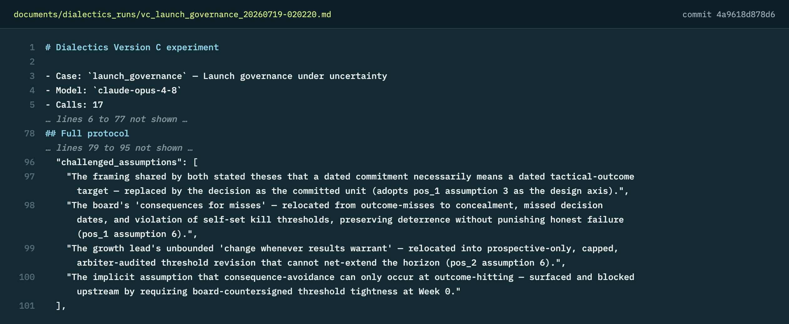

Atma Council · Recorded dialectical experiment
Accountability and
room to learn.
A worked example from the saved launch-governance experiment, 19 July 2026. This is a research scenario; the summary below follows its recorded output.
The disagreement
A company has one quarter of runway to find a repeatable acquisition channel. Its board wants dated commitments that reveal failure early. Its growth lead argues that fixed tactical milestones will reward activity and distort learning.
The board’s concern: time and money can disappear without a clear decision.
The growth lead’s concern: a team can complete the plan while learning nothing useful.
What the protocol did
It constructed the strongest opposing positions, examined their assumptions, mapped the conflict, and generated candidate arrangements. Critics represented each side, while a neutral critic tested feasibility. The final stage revised and classified the resolution.
The recorded proposal
Make the dated commitment a decision supported by evidence. Each experiment names its hypothesis, a falsifiable continue/kill/scale threshold, an accountable owner, and a decision date. The team can change tactics within that arrangement.
A fixed reporting cadence exposes raw results and decisions. A binding date at the end of the runway forces a go/no-go or an explicit extension decision. Changes to thresholds are logged before results arrive.
What criticism changed
- Require meaningful thresholds so the team cannot avoid consequences by setting an easy test.
- Protect honest, on-time reporting of negative or inconclusive results.
- Decide in advance what “promising but unconfirmed” means at the deadline.
- Name responsibility per experiment and define what happens if the arbiter of a threshold change is unavailable.
Why this example matters
You can inspect a change in the structure of the decision: accountability attaches to the evidence and the decision date, while the growth lead retains room to adapt the work. The recorded critics sharpened both responsibilities.
Experiment provenance
The saved Version C run used one fixed model, 17 calls, and baseline, no-critic, and full-protocol arms. That experiment examines the dialectical method; Council’s five-model roster is a separate product capability. The baseline also proposed learning-oriented milestones, so this example demonstrates the process and retained reasoning, rather than comparative superiority.

Private source locator:documents/dialectics_runs/vc_launch_governance_20260719-020220.md
The downloadable verification record includes the inspected artifact’s hash. This page is a plain-language summary, not a live model run.